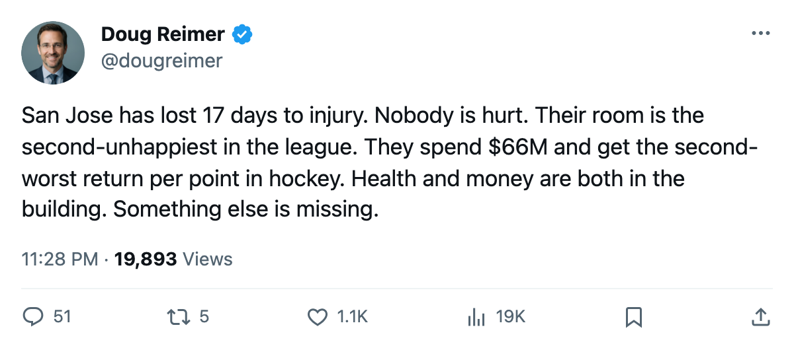
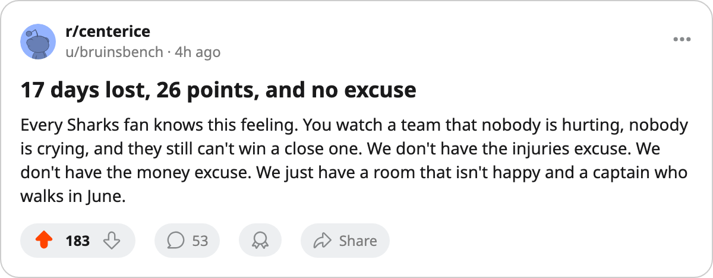

17 Days Lost, $2.55M a Point, 89.2 Morale: San Jose Is the Healthiest Rich Team in Hockey
The Sharks have committed $66.24M and lost fewer man-days to injury than anyone. Their room is the 2nd-unhappiest and their captain has 1 year left.
 Doug ReimerAnalytics editor, ex-video coach · The Slot Report
Doug ReimerAnalytics editor, ex-video coach · The Slot Report
San Jose has lost 17 days to injury this season across 17 designated spells. No other club has lost fewer than 43. The Sharks are, by the league's injury ledger, the healthiest roster in hockey. They have also committed $66.24M, the 5th-highest payroll in the league, and returned 26 points from it: $2.55M per point, the 2nd-worst cost-per-point in the league behind Washington at $2.59M.
They sit 12th in the Western Conference, 4 points back of 8th-place Edmonton and Vancouver, with 55 games left. Nobody is hurt. The room is the 2nd-unhappiest in the league at 89.2. And the captain is on an expiring deal.
The Top-Five Payroll Problem
Five clubs have committed at least $66.24M this season. The table below ranks them by payroll and shows what each one bought: points per dollar, days lost to injury, and average room morale.
| Club | Payroll | Pts | $M/pt | Days lost | Morale |
|---|---|---|---|---|---|
 New York Rangers New York Rangers | $92.95M | 43 | $2.16M | 70 | 93.3 |
 Toronto Maple Leafs Toronto Maple Leafs | $89.94M | 42 | $2.14M | 56 | 92.1 |
 St. Louis Blues St. Louis Blues | $69.76M | 39 | $1.79M | 76 | 97.3 |
 Colorado Avalanche Colorado Avalanche | $66.38M | 29 | $2.29M | 92 | 98.2 |
 San Jose Sharks San Jose Sharks | $66.24M | 26 | $2.55M | 17 | 89.2 |
St. Louis Blues and Colorado Avalanche occupy the 2 happiest rooms in hockey and have the best dollar-per-point among this group. San Jose occupies the 2nd-unhappiest and has the worst return per dollar. The health gap is wider still: San Jose has lost 17 man-days, while the other four have lost between 56 and 92.
17 Spells, 17 Days
The injury ledger for San Jose lists 17 spells. Only one carries a named body part: a leg to  Jyrki Lumme80. The league's average for a leg injury is 29 days. San Jose's total across all 17 spells is 17 days. The average spell is 1 day. Nobody is missing games.
Jyrki Lumme80. The league's average for a leg injury is 29 days. San Jose's total across all 17 spells is 17 days. The average spell is 1 day. Nobody is missing games.
The next-healthiest club is  Boston Bruins at 43 days lost, and that number comes on 26 spells, meaning Boston's spells average just under 2 days each. San Jose's 17 spells on 17 days is an outlier by any measure.
Boston Bruins at 43 days lost, and that number comes on 26 spells, meaning Boston's spells average just under 2 days each. San Jose's 17 spells on 17 days is an outlier by any measure.
The Morale Gap
At 89.2, San Jose's room is the 2nd-unhappiest in hockey. Only Philadelphia sits lower at 87.9. The gap between the two is 1.3 points. Colorado, at 98.2, is 9.0 points happier on nearly the same payroll.
Colorado at 98.2 sits at the summit, St. Louis leads the league at 97.3, and San Jose at 89.2 sits above only the Flyers. The clubs spending the most money and finishing the highest (New York, Toronto) sit between 92 and 93. The two clubs spending nearly as much as San Jose and finishing ahead of them (St. Louis at 97.3, Colorado at 98.2) are 8 to 9 points happier.
The one San Jose player the league has placed on its lowest-15 morale list is Jyrki Lumme, a 38-year-old defenseman at 76 morale on $2.30M with 1 year left. He has played 22 games at 11.4 minutes a night. His leg injury, the only named body part in the San Jose ledger, cost 3 days out of the 17.
Marleau and the Thin Top
 Patrick Marleau87 is 26, in his 9th season, and the Sharks' captain. He was drafted 2nd overall in 1997 out of the Seattle Thunderbirds of the WHL. His contract is $7.57M with 1 year left. The Bureau's Book has him at 85 overall, with a base of 89 and 0 on the Development Index. He has 24 points in 27 games at 21.7 minutes a night.
Patrick Marleau87 is 26, in his 9th season, and the Sharks' captain. He was drafted 2nd overall in 1997 out of the Seattle Thunderbirds of the WHL. His contract is $7.57M with 1 year left. The Bureau's Book has him at 85 overall, with a base of 89 and 0 on the Development Index. He has 24 points in 27 games at 21.7 minutes a night.
The highest-graded San Jose player on the Book's top 60 is  Evgeni Nabokov89 at 87. Nabokov has started 23 of 27 games at 85% workload. Behind the goaltender, the Sharks have no player on the Book's top 60. Marleau at 85 is their best skater by the Book and he sits outside it.
Evgeni Nabokov89 at 87. Nabokov has started 23 of 27 games at 85% workload. Behind the goaltender, the Sharks have no player on the Book's top 60. Marleau at 85 is their best skater by the Book and he sits outside it.
Kerry Morassutti of Colorado Avalanche told The Tunnel this week about concentrated payroll: "You've got to pick." The same arithmetic faces San Jose, just inverted. Colorado has too much money in too few bodies and a room at 98.2. San Jose has spread its money across bodies that don't produce, and the room is 9.0 points lower. Neither works.
The Sharks have 26 points in 27 games, 4 back of the 8th seed with 55 to play. They are healthy. They are solvent ($13.28M profit). Their captain walks in June. The only explanation the sheet leaves is that the money is in the wrong bodies, and the room knows it.

